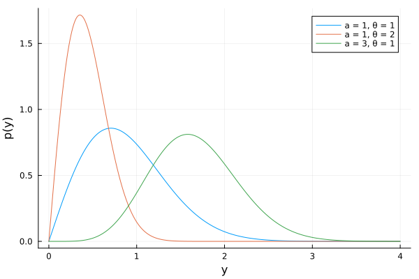

Exercise 3.9 Solution - Hoff, A First Course in Bayesian Statistical Methods
標準ベイズ統計学 演習問題 3.9 解答例
a)
answer
日本語
データ\(y_1, y_2, \dots, y_n\)を観測したとき、 \(y_1, y_2, \dots, y_n \sim \text{i.i.d. Galenshore}(a, \theta)\) とすると、 \(\theta\)の\(a\)の条件付き事後分布は、
\begin{align*} p(\theta | y_1, \dots, y_n, a) &\propto p(y_1, \dots, y_n | \theta, a) p(\theta | a) \\ &\propto \theta^{2a n} \exp \left( - \theta^2 \sum_{i=1}^n y_i^2 \right) \times p(\theta | a) \\ \end{align*}となる。上の計算より、 \(p(\theta | a)\)が共役事前分布であるためには、 \(\theta^{2 c_1} \exp(- \theta^2) \) のような項を含む分布である必要があるが、そのような分布としては、sampling model と同じ Galenshore 分布がある。
また、\(f(\theta) = - \theta^2 =: \phi\)とおくと、 \(\phi\)は\(\theta > 0\)で\(\theta\)の全単射の写像であり、
\begin{align*} p(\theta | y_1, \dots, y_n, a) &\propto \phi^{an} \exp \left( \phi \sum_{i=1}^n y_i^2 \right) \times p(\theta | a) \\ \end{align*}と問題を置き換えて \(\phi\)の事前分布として、ガンマ分布を考えることもできる。
以下では、\(\theta\)の事前分布として、Galenshore 分布を用いる。
English
When we observe data \(y_1, y_2, \dots, y_n\), assuming \(y_1, y_2, \dots, y_n \sim \text{i.i.d. Galenshore}(a, \theta)\), the conditional posterior distribution of \(\theta\) given \(a\) is:
\begin{align*} p(\theta | y_1, \dots, y_n, a) &\propto p(y_1, \dots, y_n | \theta, a) p(\theta | a) \\ &\propto \theta^{2a n} \exp \left( - \theta^2 \sum_{i=1}^n y_i^2 \right) \times p(\theta | a) \\ \end{align*}From the calculation above, for \(p(\theta | a)\) to be a conjugate prior, it needs to be a distribution containing a term like \(\theta^{2 c_1} \exp(- c_2 \theta^2) \). One such distribution is the Galenshore distribution, the same as the sampling model.
Alternatively, if we let \(f(\theta) = - \theta^2 =: \phi\), then \(\phi\) is a bijective mapping of \(\theta\) for \(\theta > 0\). We can rephrase the problem as:
\begin{align*} p(\theta | y_1, \dots, y_n, a) &\propto (-\phi)^{an} \exp \left( \phi \sum_{i=1}^n y_i^2 \right) \times p(\theta | a) \\ \end{align*}(Note: The transformation of the prior \(p(\theta|a)\) and the Jacobian would need careful handling here, the proportionality above focuses on the likelihood part’s transformation). Considering this reparameterization, one could also consider using a Gamma distribution as the prior for \(\phi\) (since \(\phi\) would be negative, perhaps a Gamma distribution for \(-\phi\)).
In the following, we will use the Galenshore distribution as the prior for \(\theta\).
plot
plot(Normal(3,2), label="Normal(3,2)") plot!(Gamma(1,1), label="Gamma(1,1)")

b)
answer
Assuming the prior for \(\theta\) is Galenshore\((b, \phi)\), the posterior can be computed as follows:
\begin{align*} p(\theta | y_1, \dots, y_n, a) &\propto p(y_1, \dots, y_n | \theta, a) p(\theta | a) \\ &\propto \theta^{2a n} \exp \left( - \theta^2 \sum_{i=1}^n y_i^2 \right) \times \theta^{2b-1} e^{-\phi^2 \theta^2} \\ &= \theta^{2(an+b) - 1} \exp \left( - \left( \sum_{i=1}^n y_i^2 + \phi^2 \right) \theta^2 \right) \\ \end{align*}ThThus, the posterior predictive density is given by: \[\theta | y_1, \dots, y_n, a \sim \text{Galenshore}(an+b, \sqrt{\sum_{i=1}^n y_i^2 + \phi^2}\]
c)
answer
FFrom the above equation, we can see that the sufficient statistic is: \(\sum_{i=1}^n y_i^2\)
d)
answer
e)
answer
Since the above is the form of a Galenshore distribution, we can conclude that:
\begin{equation} \label{eq:galenshore} \begin{aligned}[b] & \int_0^{\infty} \frac{2}{\Gamma(a)} \theta^{2a} y^{2a-1} e^{-\theta^2 y^2} dy = 1 \\ \Leftrightarrow \quad & \frac{2}{\Gamma(a)} \theta^{2a} \int_0^{\infty} y^{2a-1} e^{-\theta^2 y^2} dy = 1 \\ \Leftrightarrow \quad & \int_0^{\infty} y^{2a-1} e^{-\theta^2 y^2} dy = \frac{\Gamma(a)}{2} \theta^{-2a} \end{aligned} \end{equation}Thus, the posterior predictive density is given by:
\begin{align*} p(\tilde{y} | y_1, \dots, y_n) &= \int_0^{\infty} p(\tilde{y} | \theta) p(\theta | y_1, \dots, y_n) d\theta \\ &= \int_0^{\infty} \frac{2}{\Gamma(a)} \theta^{2a} \tilde{y}^{2a-1} e^{-\theta^2 \tilde{y}^2} \times \frac{2}{\Gamma(an+b)} \left( \sum_{i=1}^n y_i^2 + \phi^2 \right)^{an+b} \theta^{2(an+b)-1} e^{- \left( \sum_{i=1}^n y_i^2 + \phi^2 \right) \theta^2} d\theta \\ &= \frac{4}{\Gamma(a) \Gamma(an+b)} \left( \sum_{i=1}^n y_i^2 + \phi^2 \right)^{an+b} \tilde{y}^{2a-1} \int_0^{\infty} \theta^{2(a + an+b)-1} e^{-(\tilde{y}^2 + \sum_{i=1}^n y_i^2 + \phi^2)\theta^2 } d\theta \\ &= \frac{4}{\Gamma(a) \Gamma(an+b)} \left( \sum_{i=1}^n y_i^2 + \phi^2 \right)^{an+b} \tilde{y}^{2a-1} \frac{\Gamma(a + an+b)}{2(\tilde{y}^2 + \sum_{i=1}^n y_i^2 + \phi^2)^{a + an+b}} \quad (\because \eqref{eq:galenshore}) \\ &= \frac{2}{B(a, an+b)} \left( \sum_{i=1}^n y_i^2 + \phi^2 \right)^{an+b} \tilde{y}^{2a-1} (\tilde{y}^2 + \sum_{i=1}^n y_i^2 + \phi^2)^{-(a + an+b)} \\ \end{align*}